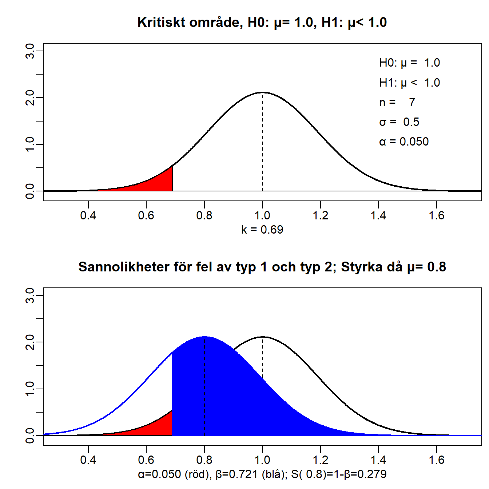
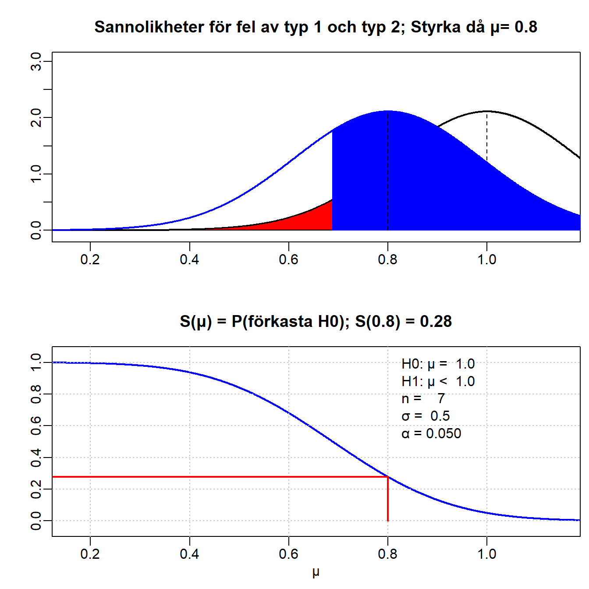
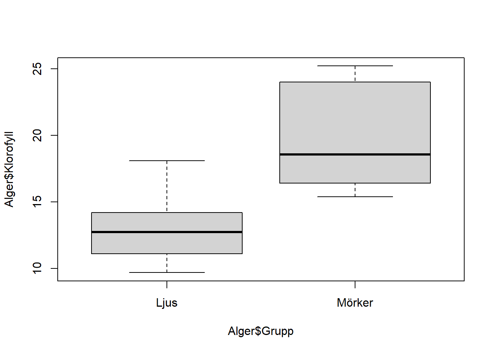

source("kod/funktioner_raknamedvariation_light.R")Statistiska test
Datorlaboration 3
Abstrakt
Syftet med dagens laboration är att du ska
- träna på de grundläggande begreppen inom hypotesprövning (t.ex. signifikansnivå och styrka) samt vilka slutsatser man kan dra från analysen
- bekanta dig med lite av de funktioner som finns i R vad det gäller olika grundläggande statistiska test
- arbeta med kursens Miniprojekt II.
Förberedelseuppgifter
Repetera begreppen hypoteser, signifikansnivå, styrkefunktion samt modell med matchade data och modell med två oberoende stickprov.
Du skall ha gjort följande uppgifter innan du kommer till laborationen.
1 Grundläggande begrepp vid hypotestestning
Läkemedel kan ge en nedsatt salivkörtelfunktion, vilket är en riskfaktor för karies och andra sjukdomar i munhålan. På 7 slumpmässigt utvalda patienter som alla fick samma medicin mätte man under 5 minuter den så kallade tuggstimulerade saliven. Normal mängd saliv under dessa förhållanden är 1 ml/min och muntorrhet anses föreligga när mängden saliv understiger 0.7 ml/min. Som modell antog man att salivmängden är normalfördelad med väntevärde \(\mu\) och standardavvikelse \(\sigma\), där \(\sigma\) anses vara 0.5 ml/min. Intressanta frågeställningar är t.ex.:
- Stöder data vår misstanke att medicinen sänker salivproduktionen?
- Om medicinen ger upphov till en genomsnittlig salivproduktion på 0.8 ml/min, hur troligt är det att vi kommer att missa den nedsatta salivproduktionen med vårt test?
- Hur många patienter ska vi mäta på om vi vill att testet ska upptäcka en nedsatt salivproduktion på 0.7,ml/min med sannolikheten 0.95?
På kursens hemsida hittar ni data i filen
saliv.RData. Kortfattade svar till frågorna som ställs i uppgifterna finns i slutet på denna del av handledningen.
Modell:
Hypoteser:
# skriv din R-kod härSvar:
# skriv din R-kod härEkvation för \(k\):
Egen beräkning av \(k\):
# skriv din R-kod härSvar:
Svar:
# skriv din R-kod härSvar:
2 Testets styrka och styrkefunktion
Antag nu att genomsnittlig salivutsöndring i riskgruppen är 0.8. Då är förstås \(H_0: \mu = 1\) falsk och vi vill att vårt test ska upptäcka detta och förkasta denna hypotes till förmån för hypotesen \(H_1: \mu < 1\). Sannolikheten att testet verkligen klarar av detta kallas för testets styrka i punkten 0.8. Använd rutinen
hypotesför att illustrera testets styrka i punkten 0.8. Kommandot är nuhypotes(\(\sigma\), \(n\), \(\mu_0\), \(\alpha\), H1-riktn, sant \(\mu\)), så i detta fall skriver duhypotes(0.5, 7, 1, 0.05, '<', 0.8).
hypotes(0.5, 7, 1, 0.05, '<', 0.8)
styrka(0.5, 7, 1, 0.05, '<', 0.8)
# skriv din R-kod härSvar:
# skriv din R-kod härSvar:
Svar till exemplet med muntorrhet
- Del 1
1.1 \(H_0: \mu = 1\); \(H_1: \mu < 1\)
1.2 \(k=\mu_0 - z_{1-\alpha}\, \frac{\sigma}{\sqrt{n}} = 1-1.6445 \cdot \frac{0.05}{\sqrt{7}}=0.689\)
1.5 Eftersom medelvärdet \(< 0.689\) förkastas \(H_0\) på nivå 0.05
1.6 Det finns en chans på 5% att vi påstår att en person i riskgruppen har en sänkt salivproduktion när den i själva verket är normal 1.7 \(H_0\) kan ej förkastas på nivå 0.01 - Del 2
2.1 \(\beta = P(\text{ej förkasta} H_0|\mu)\), d.v.s. \(\beta\) när det sanna väntevärdet är 0.8 är 1-strykan i punkten 0.8 = 1- S(0.8)
2.2 Styrkan i punkten 0.7, S(0.7), kan enligt figuren uppskattas till 0.48
2.3 Det krävs \(n=30\) patienter för att styrkan ska vara 0.95 i punkten 0.7
Några statistiska test med stickprov
Kortfattade svar till frågorna som ställs i uppgifterna finns i slutet på denna del av handledning. Datamaterialen som används är albumin, bladklorofyll och dammar, vilka du hittar på Canvas.
3 Test av väntevärde i en population (t-test)
En blandning av blodserum innehåller exakt 42 g albumin per liter. Två laboratorier (A och B) får göra sex bestämningar var av koncentrationen. Vi vill undersöka om det finns någon systematisk avvikelse från det sanna värdet (42 g/l) i var och en av dessa två grupper.
load("data/lab3_mini2_filer/albumin.RData")Modell för grupp A: Låt \(X\) vara koncentration g albumin per liter i mätningar från laboration A. Väntevärde och varians för \(X\) är \(\mu_x\) och \(\sigma^2_x\). Antag att mätningar är oberoende och likafördelade. Väntevärdet skattas med stickprovsmedelvärdet \(\hat{\mu}_x=\bar{x}\). Enligt centrala gränsvärdessatsen är \(\bar{x} \overset{A}{\sim} N(\mu_x,\frac{\sigma_x}{\sqrt{n_x}})\).
Hypoteser för grupp A:
Modell för grupp B: Låt \(Y\) vara koncentration g albumin per liter i mätningar från laboration B.
Hypoteser för grupp B:
t.test(AlbuminA, mu=42)
One Sample t-test
data: AlbuminA
t = 2.9194, df = 5, p-value = 0.03304
alternative hypothesis: true mean is not equal to 42
95 percent confidence interval:
42.05974 42.94026
sample estimates:
mean of x
42.5 t.test(AlbuminB, mu=42)
One Sample t-test
data: AlbuminB
t = -2.1843, df = 5, p-value = 0.08067
alternative hypothesis: true mean is not equal to 42
95 percent confidence interval:
35.68716 42.51284
sample estimates:
mean of x
39.1 Svar:
t.test(AlbuminB, mu=42, alternative="less")
One Sample t-test
data: AlbuminB
t = -2.1843, df = 5, p-value = 0.04034
alternative hypothesis: true mean is less than 42
95 percent confidence interval:
-Inf 41.77529
sample estimates:
mean of x
39.1 t.test(AlbuminB, mu=42, alternative="greater")
One Sample t-test
data: AlbuminB
t = -2.1843, df = 5, p-value = 0.9597
alternative hypothesis: true mean is greater than 42
95 percent confidence interval:
36.42471 Inf
sample estimates:
mean of x
39.1 Svar:
4 Jämförelse av väntevärden i två populationer (t-test vid två oberoende stickprov)
Alger i fick växa under ljusa respektive mörka förhållanden och därefter mättes klorofyllhalt.
load("data/lab3_mini2_filer/alger.RData")boxplot(Alger$Klorofyll ~ Alger$Grupp)
Svar:
Modell: Låt \(X\) vara tillväxt hos alger i mörka förhållanden med väntevärde \(\mu_x\) och varians \(\sigma^2_x\), och \(Y\) vara tillväxt hos alger i ljusa förhållanden med väntevärde \(\mu_y\) och varians \(\sigma^2_y\). Väntevärden skattas med stickprovsmedelvärden \(\hat{\mu_x}=\bar{x}\) och \(\hat{\mu_y}=\bar{y}\). Enligt centrala gränsvärdessatsen kommer skattningen av respektive väntevärde vara approximativt normalfördelad, d.v.s. \(\bar{x} \overset{A}{\sim} N(\mu_x,\frac{\sigma_x}{\sqrt{n_x}})\) och \(\bar{y} \overset{A}{\sim} N(\mu_y,\frac{\sigma_y}{\sqrt{n_y}})\).
Hypoteser: \(H_0: \mu_x = \mu_y\) mot \(H_1: \mu_x \neq \mu_y\)
t.test(Alger$Klorofyll ~ Alger$Grupp)
Welch Two Sample t-test
data: Alger$Klorofyll by Alger$Grupp
t = -3.2089, df = 9.0652, p-value = 0.01058
alternative hypothesis: true difference in means between group Ljus and group Mörker is not equal to 0
95 percent confidence interval:
-11.219229 -1.947438
sample estimates:
mean in group Ljus mean in group Mörker
13.10000 19.68333 Svar:
Hypoteser: \(H_0: \sigma^2_x = \sigma^2_y\) mot \(H_1: \sigma^2_x \neq \sigma^2_y\)
var.test(Alger$Klorofyll ~ Alger$Grupp)
F test to compare two variances
data: Alger$Klorofyll by Alger$Grupp
F = 0.51386, num df = 5, denom df = 5, p-value = 0.4825
alternative hypothesis: true ratio of variances is not equal to 1
95 percent confidence interval:
0.07190457 3.67222210
sample estimates:
ratio of variances
0.5138575 Svar:
Antagande: \(\sigma^2=\sigma^2_x = \sigma^2_y\)
t.test(Alger$Klorofyll ~ Alger$Grupp, var.equal=TRUE)
Two Sample t-test
data: Alger$Klorofyll by Alger$Grupp
t = -3.2089, df = 10, p-value = 0.009349
alternative hypothesis: true difference in means between group Ljus and group Mörker is not equal to 0
95 percent confidence interval:
-11.154519 -2.012148
sample estimates:
mean in group Ljus mean in group Mörker
13.10000 19.68333 Svar:
5 Test vid matchade data (stickprov i par)
Det har gjorts mätningar av kvävebelastning under vår respektive sommar på ett antal dammar. Om man vill jämföra kvävebelastningen mellan de två årstiderna är en rimlig modell “stickprov i par”.
load("data/lab3_mini2_filer/dammar.RData")Modell: Låt \(D\) vara skillnaden i mätning under vår och sommare för en damm, med väntevärde \(\mu\) och varians \(\sigma^2\). Vi skapar ett stickprov \((d_1,...,d_n)\) för skillnader i mätvärden. Väntevärdet skattas med stickprovsmedelvärdet, \(\hat{\mu}=\bar{d}\). Enligt centrala gränsvärdessatsen är \(\bar{d} \overset{A}{\sim} N(\mu,\frac{\sigma}{\sqrt{n}})\).
t.test(Dammar$N_belast_V, Dammar$N_belast_S, paired=TRUE)
Paired t-test
data: Dammar$N_belast_V and Dammar$N_belast_S
t = 1.2189, df = 7, p-value = 0.2624
alternative hypothesis: true mean difference is not equal to 0
95 percent confidence interval:
-19.49477 60.97227
sample estimates:
mean difference
20.73875 Svar:
Svar till några av denna sektions frågor:
- Svar
3.2 A: p-värde\(=0.033\); B: p-värde\(=0.081\); Vi kan påvisa en skillnad för A men inte för B. 95% konfidensintervall: A: \((42,06,\,42.94)\); B: \((35.69,\,42.51)\)
4.3 Varianserna är inte olika (p-värde\(=0.48\))
4.4 t-test: p-värde\(=0.009\); Vi kan påvisa en skillnad i klorofyll.
5.1 p-värde\(=0.262\) Vi kan inte påvisa någon skillnad